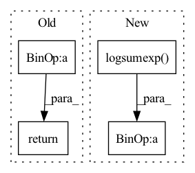

Pattern ID :289

Before Change
alpha_n = self.relu(sn - self.O_n)
r_sp_m = alpha_p * (sp - self.Delta_p)
r_sn_m = alpha_n * (sn - self.Delta_n)
_Z = torch.cat((r_sn_m, r_sp_m), 1)
_Z = _Z * self.gamma
logZ = torch.logsumexp(_Z, dim=1, keepdims=True)
loss = -r_sp_m * self.gamma + logZ
return loss.mean()
After Change
logit_p = - ap * (sp - delta_p) * self.gamma
logit_n = an * (sn - delta_n) * self.gamma
loss = self.soft_plus(torch.logsumexp(logit_n, dim=0) + torch.logsumexp(logit_p, dim=0))
return loss
In pattern: SUPERPATTERN
Frequency: 3
Non-data size: 4
Instances
Fragment ID: 948142
Project Name: xialuxi/circleloss_face
Commit Name: 4ec0746af461dac7cbc632b62b0251dd56bc5b56
Time: 2020-05-13
Author: 297509086@qq.com
File Name: CircleLoss.py
M Class Name: SparseCircleLoss
N Class Name: SparseCircleLoss
M Method Name: forward(3)
N Method Name: forward(3)
M Parent Class: nn.Module
N Parent Class: nn.Module
M File Name: CircleLoss.py
N File Name: CircleLoss.py
M Start Line: 36
M End Line: 57
N Start Line: 32
N End Line: 47
'>
Before Change
).detach()
a.scatter_(dim=1, index=label.unsqueeze(1), src=src)
sigma = torch.ones_like(inp, device=inp.device, dtype=inp.dtype) * self.m
src = torch.ones_like(label.unsqueeze(1), dtype=inp.dtype, device=inp.device) - self.m
sigma.scatter_(dim=1, index=label.unsqueeze(1), src=src)
return self.loss(a * (inp - sigma) * self.gamma, label)
def convert_label_to_similarity(normed_feature: Tensor, label: Tensor) -> Tuple[Tensor, Tensor]:
After Change
logit_p = - ap * (sp - delta_p) * self.gamma
logit_n = an * (sn - delta_n) * self.gamma
loss = self.soft_plus(torch.logsumexp(logit_n, dim=0) + torch.logsumexp(logit_p, dim=0))
return loss
'>
Fragment ID: 948105
Project Name: tinyzeamays/circleloss
Commit Name: 61758eefe091cf44f4de87aadd84fcb2bc377f94
Time: 2020-04-04
Author: 1049793129@qq.com
File Name: circle_loss.py
M Class Name: CircleLossLikeCE
N Class Name: CircleLoss
M Method Name: forward(3)
N Method Name: forward(3)
M Parent Class: nn.Module
N Parent Class: nn.Module
M File Name: circle_loss.py
N File Name: circle_loss.py
M Start Line: 24
M End Line: 35
N Start Line: 28
N End Line: 39
'>
Before Change
dLoss = self._loss(logitsCondition, torch.ones_like(logitsCondition)) + self._loss(logitsJoint, torch.zeros_like(logitsJoint))
if step % 2 == 0:
return dLoss
return -dLoss
After Change
// self._loss = nn.BCEWithLogitsLoss()
def forward(self, logitsCondition: torch.Tensor, logitsJoint: torch.Tensor, step: int):
expMean = (logitsJoint.detach().logsumexp(0) - log(len(logitsJoint)))
self._ema -= self._alpha * (self._ema - expMean)
loss = EMALoss.apply(logitsJoint, self._ema)
// dLoss = self._loss(logitsCondition, torch.ones_like(logitsCondition)) + self._loss(logitsJoint, torch.zeros_like(logitsJoint))
return (-logitsCondition.mean()) + loss
'>
Fragment ID: 948151
Project Name: xiaosu-zhu/mcquic
Commit Name: c82455f8eec854336ea002e002aabad3cfa077f1
Time: 2021-06-15
Author: xiaosu.zhu@outlook.com
File Name: src/mcqc/losses/mlm.py
M Class Name: InfoMaxLoss
N Class Name: InfoMaxLoss
M Method Name: forward(4)
N Method Name: forward(4)
M Parent Class: nn.Module
N Parent Class: nn.Module
M File Name: src/mcqc/losses/mlm.py
N File Name: src/mcqc/losses/mlm.py
M Start Line: 102
M End Line: 105
N Start Line: 122
N End Line: 126